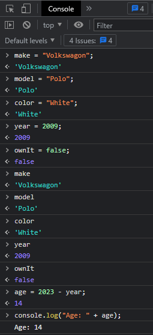
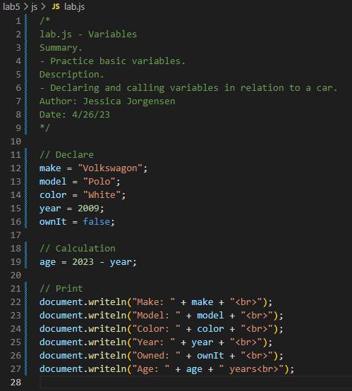
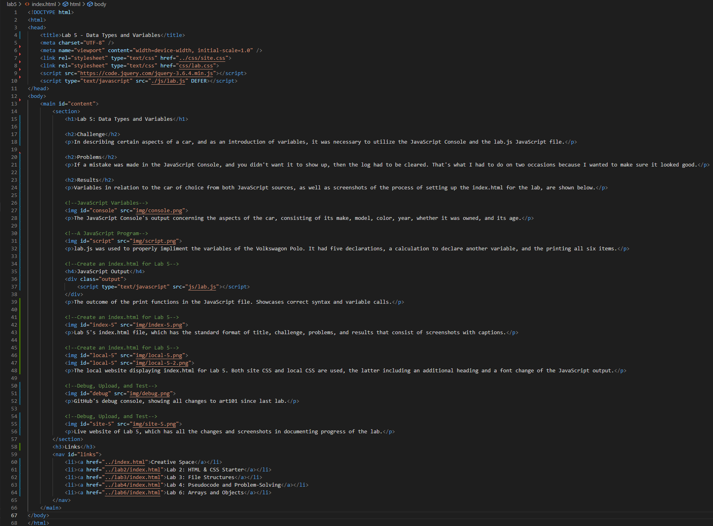
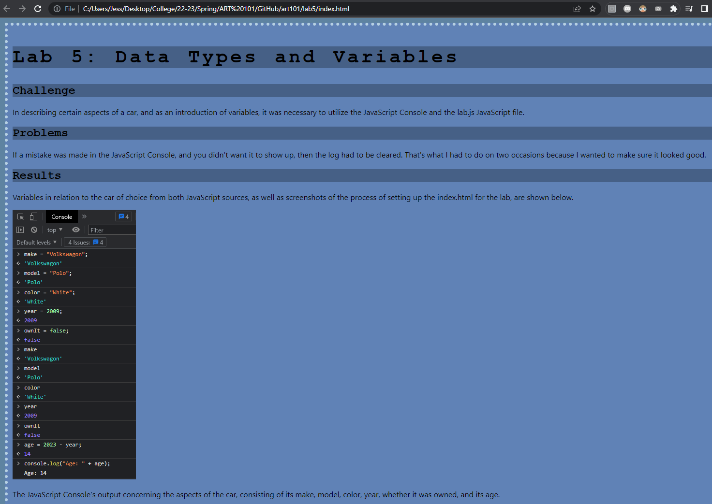
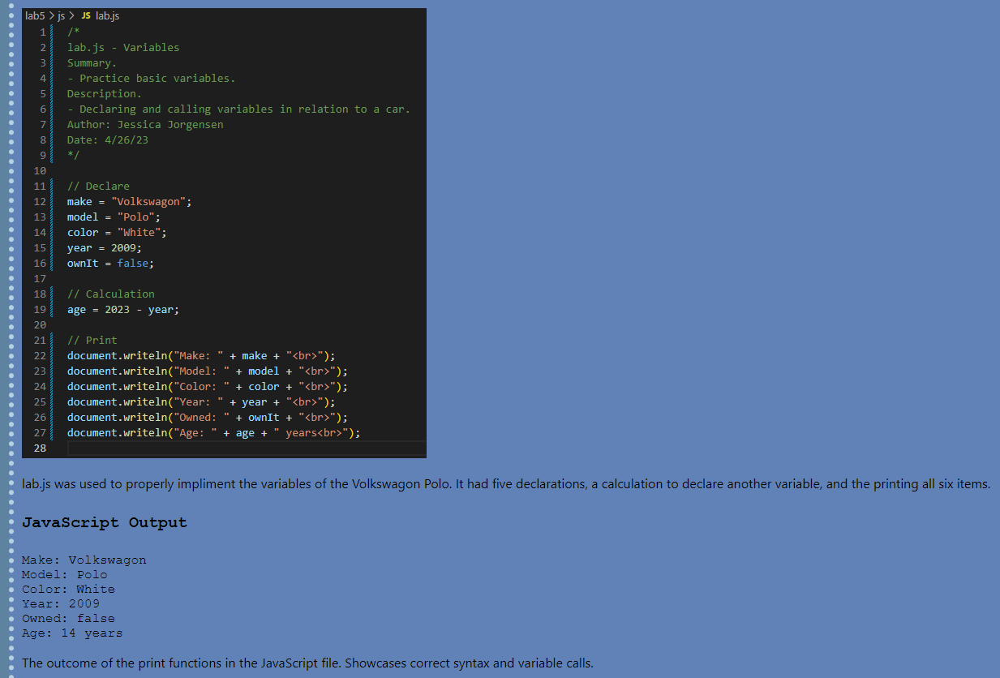
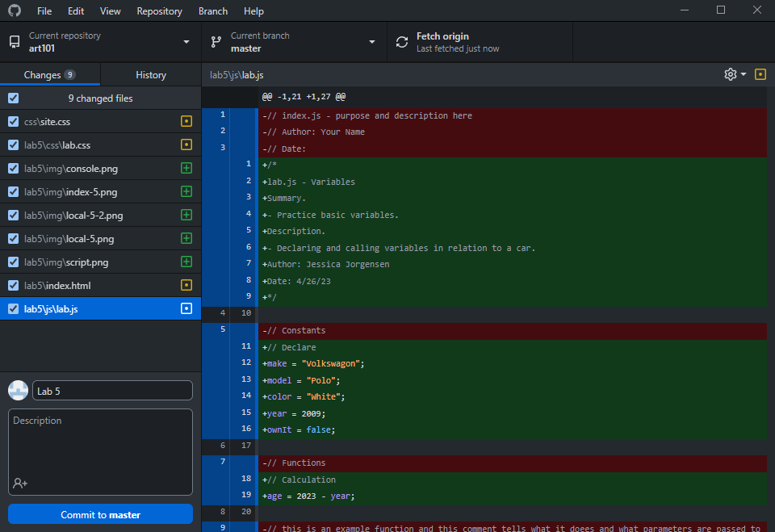
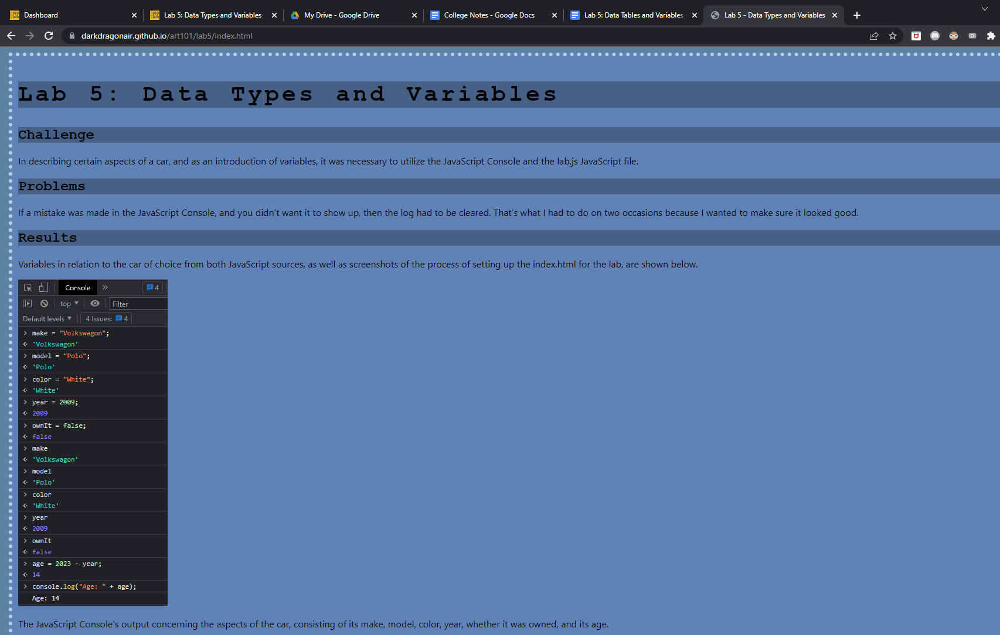

Lab 5: Data Types and Variables
Challenge
In describing certain aspects of a car, and as an introduction of variables, it was necessary to utilize the JavaScript Console and the lab.js JavaScript file.
Problems
If a mistake was made in the JavaScript Console, and you didn't want it to show up, then the log had to be cleared. That's what I had to do on two occasions because I wanted to make sure it looked good.
Results
Variables in relation to the car of choice from both JavaScript sources, as well as screenshots of the process of setting up the index.html for the lab, are shown below.
The JavaScript Console's output concerning the aspects of the car, consisting of its make, model, color, year, whether it was owned, and its age.
lab.js was used to properly impliment the variables of the Volkswagon Polo. It had five declarations, a calculation to declare another variable, and the printing all six items.
JavaScript Output
The outcome of the print functions in the JavaScript file. Showcases correct syntax and variable calls.
Lab 5's index.html file, which has the standard format of title, challenge, problems, and results that consist of screenshots with captions.
 The local website displaying index.html for Lab 5. Both site CSS and local CSS are used, the latter including an additional heading and a font change of the JavaScript output.
GitHub's debug console, showing all changes to art101 since last lab.
Live website of Lab 5, which has all the changes and screenshots in documenting progress of the lab.